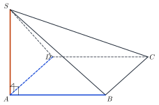
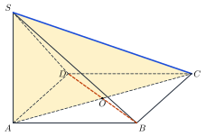
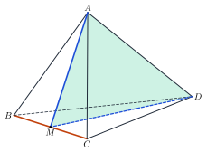

A Line Perpendicular to a PlaneĐường thẳng vuông góc với mặt phẳng
Grade 11 · Topic: Perpendicularity in SpaceLớp 11 · Chủ đề: Quan hệ vuông góc trong không gian
1Lesson IntroductionGiới thiệu bài học
Learning goalsMục tiêu bài học
By the end of this lesson you can:
Sau bài học này, em có thể:
define a line perpendicular to a plane and state the criterion;
nêu được định nghĩa đường thẳng vuông góc với mặt phẳng và điều kiện vuông góc;
prove that a line is perpendicular to a plane, and deduce perpendicular lines;
chứng minh đường thẳng vuông góc với mặt phẳng, từ đó suy ra hai đường thẳng vuông góc;
use the links between parallelism and perpendicularity, and the perpendicular bisector plane;
vận dụng mối liên hệ giữa quan hệ song song và quan hệ vuông góc, mặt phẳng trung trực;
check verticality in real life (poles, walls, columns).
kiểm tra tính thẳng đứng trong thực tế (cột, tường, trụ).
2Mathematical VocabularyTừ vựng Toán học
line perpendicular to a plane – a line perpendicular to every line of the plane.
đường thẳng vuông góc với mặt phẳng – đường thẳng vuông góc với mọi đường thẳng nằm trong mặt phẳng.
perpendicular bisector plane – the plane through the midpoint of a segment and perpendicular to it; the set of points equidistant from its endpoints.
mặt phẳng trung trực – mặt phẳng đi qua trung điểm của đoạn thẳng và vuông góc với đoạn thẳng đó; là tập hợp các điểm cách đều hai đầu mút.
criterion for perpendicularity – a line perpendicular to two intersecting lines of a plane is perpendicular to the plane.
điều kiện vuông góc – đường thẳng vuông góc với hai đường thẳng cắt nhau nằm trong mặt phẳng thì vuông góc với mặt phẳng đó.
3Useful English PhrasesCụm từ tiếng Anh thường gặp
The line is perpendicular to two intersecting lines of the plane.
Đường thẳng vuông góc với hai đường thẳng cắt nhau nằm trong mặt phẳng.
Therefore it is perpendicular to the plane.
Do đó nó vuông góc với mặt phẳng.
A line perpendicular to a plane is perpendicular to every line in it.
Đường thẳng vuông góc với mặt phẳng thì vuông góc với mọi đường thẳng nằm trong mặt phẳng đó.
The two lines are both perpendicular to the base, so they are parallel.
Hai đường thẳng cùng vuông góc với đáy nên song song.
The pole stands vertically.
Cái cột đứng thẳng.
4Prerequisite ReviewÔn tập kiến thức nền
From Bài 22: \(a\perp b\iff(a,b)=90^\circ\), and \(a\parallel b,\ c\perp a\Rightarrow c\perp b\). Grade 9: in a square the diagonals are perpendicular; in an isosceles triangle the median is also an altitude.
Từ Bài 22: \(a\perp b\iff(a,b)=90^\circ\), và \(a\parallel b,\ c\perp a\Rightarrow c\perp b\). Lớp 9: hai đường chéo hình vuông vuông góc; trong tam giác cân, đường trung tuyến cũng là đường cao.
5TheoryLý thuyết
5.1 Definition and criterionĐịnh nghĩa và điều kiện
DefinitionĐịnh nghĩa
\(d\perp(P)\) when \(d\) is perpendicular to every line lying in \((P)\). Then \(d\) meets \((P)\) at exactly one point.
\(d\perp(P)\) khi \(d\) vuông góc với mọi đường thẳng nằm trong \((P)\). Khi đó \(d\) cắt \((P)\) tại đúng một điểm.
CriterionĐiều kiện
If \(d\perp a\), \(d\perp b\), with \(a\), \(b\subset(P)\) intersecting, then \(d\perp(P)\). Two parallel lines are not enough.
Nếu \(d\perp a\), \(d\perp b\) với \(a\), \(b\) nằm trong \((P)\) và cắt nhau thì \(d\perp(P)\). Hai đường song song thì chưa đủ.

5.2 PropertiesTính chất
Existence and uniquenessSự tồn tại và duy nhất
Through a point there is exactly one plane perpendicular to a given line, and exactly one line perpendicular to a given plane.
Qua một điểm có duy nhất một mặt phẳng vuông góc với một đường thẳng cho trước, và duy nhất một đường thẳng vuông góc với một mặt phẳng cho trước.
The perpendicular bisector plane of \(AB\) passes through its midpoint and is perpendicular to \(AB\); it is the set of points \(M\) with \(MA=MB\).
Mặt phẳng trung trực của \(AB\) đi qua trung điểm và vuông góc với \(AB\); đó là tập hợp các điểm \(M\) có \(MA=MB\).
Parallel and perpendicularLiên hệ song song – vuông góc
\(a\parallel b\), \((P)\perp a\Rightarrow(P)\perp b\); two distinct lines perpendicular to one plane are parallel.
\(a\parallel b\), \((P)\perp a\Rightarrow(P)\perp b\); hai đường thẳng phân biệt cùng vuông góc với một mặt phẳng thì song song.
\((P)\parallel(Q)\), \(a\perp(P)\Rightarrow a\perp(Q)\); two distinct planes perpendicular to one line are parallel.
\((P)\parallel(Q)\), \(a\perp(P)\Rightarrow a\perp(Q)\); hai mặt phẳng phân biệt cùng vuông góc với một đường thẳng thì song song.
\(a\parallel(P)\), \(b\perp(P)\Rightarrow b\perp a\).
\(a\parallel(P)\), \(b\perp(P)\Rightarrow b\perp a\).
Watch out!Lưu ý
To prove \(a\perp b\) in space, a common strategy is: find a plane containing \(b\) that is perpendicular to \(a\).
Để chứng minh \(a\perp b\) trong không gian, cách thường dùng: tìm một mặt phẳng chứa \(b\) và vuông góc với \(a\).
6Worked ExamplesVí dụ có lời giải
ExampleVí dụ 1BasicCơ bản – Using the criterionDùng điều kiện vuông góc
\(S.ABCD\) has a square base and \(SA\perp(ABCD)\). Prove \(BC\perp(SAB)\) and \(CD\perp(SAD)\).
Hình chóp \(S.ABCD\) có đáy là hình vuông, \(SA\perp(ABCD)\). Chứng minh \(BC\perp(SAB)\) và \(CD\perp(SAD)\).
Analysis: Find two intersecting lines of \((SAB)\) perpendicular to \(BC\).
Phân tích: Tìm hai đường thẳng cắt nhau trong \((SAB)\) cùng vuông góc với \(BC\).
\(BC\perp AB\) (square) and \(BC\perp SA\) (\(SA\perp(ABCD)\)); \(AB\), \(SA\) meet at \(A\): \(BC\perp(SAB)\).
\(BC\perp AB\) (hình vuông) và \(BC\perp SA\) (vì \(SA\perp(ABCD)\)); \(AB\), \(SA\) cắt nhau tại \(A\): \(BC\perp(SAB)\).
Similarly \(CD\perp AD\), \(CD\perp SA\): \(CD\perp(SAD)\). Consequence: \(BC\perp SB\), \(CD\perp SD\) – all four lateral faces are right triangles.
Tương tự \(CD\perp AD\), \(CD\perp SA\): \(CD\perp(SAD)\). Hệ quả: \(BC\perp SB\), \(CD\perp SD\) – bốn mặt bên đều là tam giác vuông.
Proved; the lateral faces are right triangles at \(A\), \(A\), \(B\), \(D\).
Đã chứng minh; các mặt bên vuông lần lượt tại \(A\), \(A\), \(B\), \(D\).
ExampleVí dụ 2BasicCơ bản – Three perpendicular edgesBa cạnh đôi một vuông góc
\(OA\), \(OB\), \(OC\) are pairwise perpendicular and \(OA=OB=OC=a\). Prove \(OA\perp(OBC)\) and find the sides of triangle \(ABC\).
Cho \(OA\), \(OB\), \(OC\) đôi một vuông góc và \(OA=OB=OC=a\). Chứng minh \(OA\perp(OBC)\) và tính các cạnh của tam giác \(ABC\).
Analysis: \(OB\), \(OC\) meet at \(O\).
Phân tích: \(OB\), \(OC\) cắt nhau tại \(O\).
\(OA\perp OB\), \(OA\perp OC\): \(OA\perp(OBC)\).
\(OA\perp OB\), \(OA\perp OC\): \(OA\perp(OBC)\).
Each of \(AB\), \(BC\), \(CA\) is the hypotenuse of an isosceles right triangle with legs \(a\): equal to \(a\sqrt2\).
Mỗi cạnh \(AB\), \(BC\), \(CA\) là cạnh huyền của tam giác vuông cân có cạnh góc vuông \(a\): bằng \(a\sqrt2\).
\(ABC\) is equilateral with side \(a\sqrt2\).
Tam giác \(ABC\) đều cạnh \(a\sqrt2\).
ExampleVí dụ 3IntermediateTrung bình – A diagonal perpendicular to an edgeĐường chéo vuông góc với cạnh bên
\(S.ABCD\): square base with centre \(O\), \(SA\perp(ABCD)\). Prove \(BD\perp(SAC)\) and \(BD\perp SC\).
Hình chóp \(S.ABCD\) có đáy là hình vuông tâm \(O\), \(SA\perp(ABCD)\). Chứng minh \(BD\perp(SAC)\) và \(BD\perp SC\).

Analysis: Strategy: a plane containing \(SC\) and perpendicular to \(BD\).
Phân tích: Chiến lược: tìm mặt phẳng chứa \(SC\) và vuông góc với \(BD\).
\(BD\perp AC\) (diagonals of a square), \(BD\perp SA\); \(AC\cap SA=A\): \(BD\perp(SAC)\).
\(BD\perp AC\) (hai đường chéo hình vuông), \(BD\perp SA\); \(AC\cap SA=A\): \(BD\perp(SAC)\).
\(SC\subset(SAC)\Rightarrow BD\perp SC\).
\(SC\subset(SAC)\Rightarrow BD\perp SC\).
\(BD\perp(SAC)\), so \(BD\perp SC\) (they are skew!).
\(BD\perp(SAC)\) nên \(BD\perp SC\) (hai đường này chéo nhau!).
ExampleVí dụ 4IntermediateTrung bình – Opposite edges of a tetrahedronHai cạnh đối của tứ diện
Tetrahedron \(ABCD\) has \(AB=AC\) and \(DB=DC\). Prove \(BC\perp AD\).
Tứ diện \(ABCD\) có \(AB=AC\) và \(DB=DC\). Chứng minh \(BC\perp AD\).

Analysis: Let \(M\) be the midpoint of \(BC\).
Phân tích: Gọi \(M\) là trung điểm của \(BC\).
Triangles \(ABC\), \(DBC\) are isosceles: \(AM\perp BC\), \(DM\perp BC\).
Tam giác \(ABC\), \(DBC\) cân: \(AM\perp BC\), \(DM\perp BC\).
\(AM\), \(DM\) meet at \(M\): \(BC\perp(ADM)\supset AD\). (\((ADM)\) is the perpendicular bisector plane of \(BC\).)
\(AM\), \(DM\) cắt nhau tại \(M\): \(BC\perp(ADM)\supset AD\). (\((ADM)\) chính là mặt phẳng trung trực của \(BC\).)
\(BC\perp AD\).
\(BC\perp AD\).
ExampleVí dụ 5AdvancedNâng cao – Is the pole vertical?Cột có thẳng đứng không?
A worker sets up a 6 m flagpole on flat ground. a) Why must she check the right angle with the ground in two different directions? b) A guy rope goes from the top to a peg 8 m from the foot. How long is it?
Một công nhân dựng cột cờ cao 6 m trên mặt đất phẳng. a) Vì sao phải kiểm tra góc vuông với mặt đất theo hai hướng khác nhau? b) Một sợi dây néo nối đỉnh cột với cọc cách chân cột 8 m. Sợi dây dài bao nhiêu?
Analysis: Criterion: two intersecting lines of the ground.
Phân tích: Điều kiện: hai đường thẳng cắt nhau của mặt đất.
a) One right angle only shows the pole lies in a plane perpendicular to one ground line – it may still lean sideways. Right angles with two intersecting ground lines give pole \(\perp\) ground.
a) Một góc vuông chỉ cho biết cột vuông góc với một đường thẳng của mặt đất – cột vẫn có thể nghiêng sang bên. Vuông góc với hai đường cắt nhau của mặt đất thì cột vuông góc với mặt đất.
b) The pole is then perpendicular to the line from its foot to the peg: rope \(=\sqrt{6^2+8^2}=10\) m.
b) Khi đó cột vuông góc với đường nối chân cột với cọc: dây dài \(\sqrt{6^2+8^2}=10\) m.
a) To use the criterion; b) 10 m.
a) Để dùng điều kiện vuông góc; b) 10 m.
7PracticeBài tập luyện tập
A. Multiple ChoiceA. Trắc nghiệm nhiều lựa chọn
\(S.ABCD\): square base, \(SA\perp(ABCD)\). Which line is perpendicular to \((SAB)\)?
Hình chóp \(S.ABCD\) có đáy hình vuông, \(SA\perp(ABCD)\). Đường thẳng nào vuông góc với mặt phẳng \((SAB)\)?
Answer: b. \(BC\perp SA\) and a second line of \((SAB)\).
Đáp án b. \(BC\) vuông góc với \(SA\) và với một đường thẳng khác của \((SAB)\) cắt \(SA\).
\(S.ABC\): \(SA\perp(ABC)\), triangle \(ABC\) right-angled at \(B\). Then \(BC\) is perpendicular to…
Hình chóp \(S.ABC\) có \(SA\perp(ABC)\), tam giác \(ABC\) vuông tại \(B\). Khi đó \(BC\) vuông góc với mặt phẳng…
Answer: d. \(BC\perp SA\) and \(BC\) is perpendicular to the other leg.
Đáp án d. \(BC\perp SA\) và \(BC\) vuông góc với cạnh góc vuông còn lại.
\(S.ABCD\): square base of side 4, \(SA\perp(ABCD)\), \(SA=2\). Then \(SC=\)…
Hình chóp \(S.ABCD\) có đáy là hình vuông cạnh 4, \(SA\perp(ABCD)\), \(SA=2\). Độ dài \(SC\) bằng…
Answer: c. \(SA\perp AC\), \(AC=4\sqrt2\).
Đáp án c. \(SA\perp AC\), \(AC=4\sqrt2\): \(SC=\sqrt{4+32}=6\).
B. True or FalseB. Đúng hoặc sai
A line perpendicular to two lines of a plane is perpendicular to the plane.
Đường thẳng vuông góc với hai đường thẳng nằm trong một mặt phẳng thì vuông góc với mặt phẳng đó.
Recall the criterion and the properties.
Nhớ lại điều kiện vuông góc và các tính chất.
\(S.ABCD\): square base, \(SA\perp(ABCD)\). Then \(BD\perp SC\).
Hình chóp \(S.ABCD\) có đáy hình vuông, \(SA\perp(ABCD)\). Khi đó \(BD\perp SC\).
\(BD\perp(SAC)\).
\(BD\perp(SAC)\supset SC\).
C. Short AnswerC. Trả lời ngắn
Box \(ABCD.A'B'C'D'\): \(AB=2\), \(AD=3\), \(AA'=6\). Find \(A'C\).
Hình hộp chữ nhật \(ABCD.A'B'C'D'\) có \(AB=2\), \(AD=3\), \(AA'=6\). Tính \(A'C\).
Enter a number.
Nhập một số.
\(AA'\perp AC\).
\(AA'\perp(ABCD)\) nên \(AA'\perp AC\): \(A'C=\sqrt{4+9+36}=7\).
A 6 m pole stands perpendicular to flat ground. A rope joins its top to a peg 8 m from its foot. Find the length of the rope (m).
Một cột cao 6 m dựng vuông góc với mặt đất phẳng. Sợi dây nối đỉnh cột với cọc cách chân cột 8 m. Tính chiều dài sợi dây (m).
Enter a number.
Nhập một số.
The pole is perpendicular to the ground line through its foot.
Cột vuông góc với đường thẳng qua chân cột nằm trên mặt đất: \(\sqrt{36+64}=10\).
A. Multiple ChoiceA. Trắc nghiệm nhiều lựa chọn
\(S.ABCD\): square base, \(SA\perp(ABCD)\). Which line is perpendicular to \((SAD)\)?
Hình chóp \(S.ABCD\) có đáy hình vuông, \(SA\perp(ABCD)\). Đường thẳng nào vuông góc với mặt phẳng \((SAD)\)?
Answer: b. \(CD\perp SA\) and a second line of \((SAD)\).
Đáp án b. \(CD\) vuông góc với \(SA\) và với một đường thẳng khác của \((SAD)\) cắt \(SA\).
\(S.ABC\): \(SA\perp(ABC)\), triangle \(ABC\) right-angled at \(A\). Then \(AB\) is perpendicular to…
Hình chóp \(S.ABC\) có \(SA\perp(ABC)\), tam giác \(ABC\) vuông tại \(A\). Khi đó \(AB\) vuông góc với mặt phẳng…
Answer: d. \(AB\perp SA\) and \(AB\) is perpendicular to the other leg.
Đáp án d. \(AB\perp SA\) và \(AB\) vuông góc với cạnh góc vuông còn lại.
\(S.ABCD\): square base of side 6, \(SA\perp(ABCD)\), \(SA=7\). Then \(SC=\)…
Hình chóp \(S.ABCD\) có đáy là hình vuông cạnh 6, \(SA\perp(ABCD)\), \(SA=7\). Độ dài \(SC\) bằng…
Answer: d. \(SA\perp AC\), \(AC=6\sqrt2\).
Đáp án d. \(SA\perp AC\), \(AC=6\sqrt2\): \(SC=\sqrt{49+72}=11\).
B. True or FalseB. Đúng hoặc sai
Two distinct lines perpendicular to the same plane are parallel.
Hai đường thẳng phân biệt cùng vuông góc với một mặt phẳng thì song song với nhau.
Recall the criterion and the properties.
Nhớ lại điều kiện vuông góc và các tính chất.
\(S.ABCD\): square base, \(SA\perp(ABCD)\). Then \(BC\perp SD\).
Hình chóp \(S.ABCD\) có đáy hình vuông, \(SA\perp(ABCD)\). Khi đó \(BC\perp SD\).
\(BC\parallel AD\) and \((SD,AD)=\widehat{SDA}\ne90^\circ\).
\(BC\parallel AD\) nên \((BC,SD)=\widehat{SDA}\ne90^\circ\) (tam giác \(SAD\) vuông tại \(A\)).
C. Short AnswerC. Trả lời ngắn
Box \(ABCD.A'B'C'D'\): \(AB=1\), \(AD=4\), \(AA'=8\). Find \(A'C\).
Hình hộp chữ nhật \(ABCD.A'B'C'D'\) có \(AB=1\), \(AD=4\), \(AA'=8\). Tính \(A'C\).
Enter a number.
Nhập một số.
\(AA'\perp AC\).
\(AA'\perp(ABCD)\) nên \(AA'\perp AC\): \(A'C=\sqrt{1+16+64}=9\).
A 5 m pole stands perpendicular to flat ground. A rope joins its top to a peg 12 m from its foot. Find the length of the rope (m).
Một cột cao 5 m dựng vuông góc với mặt đất phẳng. Sợi dây nối đỉnh cột với cọc cách chân cột 12 m. Tính chiều dài sợi dây (m).
Enter a number.
Nhập một số.
The pole is perpendicular to the ground line through its foot.
Cột vuông góc với đường thẳng qua chân cột nằm trên mặt đất: \(\sqrt{25+144}=13\).
A. Multiple ChoiceA. Trắc nghiệm nhiều lựa chọn
\(S.ABCD\): square base, \(SA\perp(ABCD)\). Which line is perpendicular to \((SAC)\)?
Hình chóp \(S.ABCD\) có đáy hình vuông, \(SA\perp(ABCD)\). Đường thẳng nào vuông góc với mặt phẳng \((SAC)\)?
Answer: b. \(BD\perp SA\) and a second line of \((SAC)\).
Đáp án b. \(BD\) vuông góc với \(SA\) và với một đường thẳng khác của \((SAC)\) cắt \(SA\).
\(S.ABC\): \(SA\perp(ABC)\), triangle \(ABC\) right-angled at \(C\). Then \(BC\) is perpendicular to…
Hình chóp \(S.ABC\) có \(SA\perp(ABC)\), tam giác \(ABC\) vuông tại \(C\). Khi đó \(BC\) vuông góc với mặt phẳng…
Answer: d. \(BC\perp SA\) and \(BC\) is perpendicular to the other leg.
Đáp án d. \(BC\perp SA\) và \(BC\) vuông góc với cạnh góc vuông còn lại.
\(S.ABCD\): square base of side 6, \(SA\perp(ABCD)\), \(SA=3\). Then \(SC=\)…
Hình chóp \(S.ABCD\) có đáy là hình vuông cạnh 6, \(SA\perp(ABCD)\), \(SA=3\). Độ dài \(SC\) bằng…
Answer: c. \(SA\perp AC\), \(AC=6\sqrt2\).
Đáp án c. \(SA\perp AC\), \(AC=6\sqrt2\): \(SC=\sqrt{9+72}=9\).
B. True or FalseB. Đúng hoặc sai
Through a point there are infinitely many planes perpendicular to a given line.
Qua một điểm có vô số mặt phẳng vuông góc với một đường thẳng cho trước.
Recall the criterion and the properties.
Nhớ lại điều kiện vuông góc và các tính chất.
\(S.ABCD\): square base, \(SA\perp(ABCD)\). Then \(CD\perp SD\).
Hình chóp \(S.ABCD\) có đáy hình vuông, \(SA\perp(ABCD)\). Khi đó \(CD\perp SD\).
\(CD\perp(SAD)\).
\(CD\perp AD\), \(CD\perp SA\) nên \(CD\perp(SAD)\supset SD\).
C. Short AnswerC. Trả lời ngắn
Box \(ABCD.A'B'C'D'\): \(AB=4\), \(AD=4\), \(AA'=7\). Find \(A'C\).
Hình hộp chữ nhật \(ABCD.A'B'C'D'\) có \(AB=4\), \(AD=4\), \(AA'=7\). Tính \(A'C\).
Enter a number.
Nhập một số.
\(AA'\perp AC\).
\(AA'\perp(ABCD)\) nên \(AA'\perp AC\): \(A'C=\sqrt{16+16+49}=9\).
A 9 m pole stands perpendicular to flat ground. A rope joins its top to a peg 12 m from its foot. Find the length of the rope (m).
Một cột cao 9 m dựng vuông góc với mặt đất phẳng. Sợi dây nối đỉnh cột với cọc cách chân cột 12 m. Tính chiều dài sợi dây (m).
Enter a number.
Nhập một số.
The pole is perpendicular to the ground line through its foot.
Cột vuông góc với đường thẳng qua chân cột nằm trên mặt đất: \(\sqrt{81+144}=15\).
D. Self-practice: Multiple ChoiceD. Tự luyện: trắc nghiệm
\(S.ABCD\) has a square base and \(SA\perp(ABCD)\), \(SA=5\). Which line is perpendicular to \((SAC)\)?
Hình chóp \(S.ABCD\) có đáy là hình vuông, \(SA\perp(ABCD)\), \(SA=5\). Đường thẳng nào vuông góc với mặt phẳng \((SAC)\)?
Answer: b. \(BD\) is perpendicular to \(SA\) and to a second line of \((SAC)\).
Đáp án b. \(BD\) vuông góc với \(SA\) và với một đường thẳng nữa của \((SAC)\) (hai đường cắt nhau).
\(S.ABC\) has \(SA\perp(ABC)\), \(SA=5\), and triangle \(ABC\) is right-angled at \(C\). Then \(BC\) is perpendicular to…
Hình chóp \(S.ABC\) có \(SA\perp(ABC)\), \(SA=5\), tam giác \(ABC\) vuông tại \(C\). Khi đó \(BC\) vuông góc với mặt phẳng…
Answer: b. \(BC\perp SA\) and \(BC\) is perpendicular to a leg at \(C\).
Đáp án b. \(BC\perp SA\) và \(BC\) vuông góc với cạnh góc vuông còn lại tại \(C\).
\(S.ABCD\): square base of side 12, \(SA\perp(ABCD)\), \(SA=14\). Then \(SC=\)…
Hình chóp \(S.ABCD\) có đáy là hình vuông cạnh 12, \(SA\perp(ABCD)\), \(SA=14\). Độ dài \(SC\) là…
Answer: d. \(SA\perp AC\), \(AC=12\sqrt2\).
Đáp án d. \(SA\perp AC\) nên \(SC=\sqrt{SA^2+AC^2}=\sqrt{196+288}=22\).
\(OA\), \(OB\), \(OC\) are pairwise perpendicular with \(OA=4\), \(OB=3\), \(OC=9\). Then \(AB=\)…
Cho \(OA\), \(OB\), \(OC\) đôi một vuông góc với \(OA=4\), \(OB=3\), \(OC=9\). Độ dài \(AB\) là…
Answer: c. \(OA\perp(OBC)\) so \(OA\perp OB\).
Đáp án c. \(OA\perp OB\) nên \(AB=\sqrt{OA^2+OB^2}=5\).
A flagpole 16 m high stands perpendicular to flat ground. A rope goes from its top to a peg 30 m from its foot. The rope is…
Một cột cờ cao 16 m dựng vuông góc với mặt đất phẳng. Một sợi dây nối đỉnh cột với một cọc cách chân cột 30 m. Sợi dây dài…
Answer: a. The pole is perpendicular to every line of the ground through its foot.
Đáp án a. Cột vuông góc với mặt đất nên vuông góc với đường thẳng nối chân cột với cọc: dây dài \(\sqrt{256+900}=34\) m.
Box \(ABCD.A'B'C'D'\): \(AB=6\), \(AD=6\), \(AA'=7\). Then \(A'C=\)…
Hình hộp chữ nhật \(ABCD.A'B'C'D'\) có \(AB=6\), \(AD=6\), \(AA'=7\). Độ dài \(A'C\) là…
Answer: c. \(AA'\perp(ABCD)\), so \(AA'\perp AC\).
Đáp án c. \(AA'\perp(ABCD)\) nên \(AA'\perp AC\): \(A'C=\sqrt{AC^2+AA'^2}=\sqrt{36+36+49}=11\).
\(S.ABC\) has \(SA\perp(ABC)\), \(SA=12\), \(AB=16\). Then \(SB=\)…
Hình chóp \(S.ABC\) có \(SA\perp(ABC)\), \(SA=12\), \(AB=16\). Độ dài \(SB\) là…
Answer: c. \(SA\perp AB\).
Đáp án c. \(SA\perp(ABC)\) nên \(SA\perp AB\): \(SB=\sqrt{SA^2+AB^2}=20\).
\(S.ABCD\) has a square base and \(SA\perp(ABCD)\), \(SA=6\). Which line is perpendicular to \((SAD)\)?
Hình chóp \(S.ABCD\) có đáy là hình vuông, \(SA\perp(ABCD)\), \(SA=6\). Đường thẳng nào vuông góc với mặt phẳng \((SAD)\)?
Answer: c. \(AB\) is perpendicular to \(SA\) and to a second line of \((SAD)\).
Đáp án c. \(AB\) vuông góc với \(SA\) và với một đường thẳng nữa của \((SAD)\) (hai đường cắt nhau).
D. Self-practice: Multiple ChoiceD. Tự luyện: trắc nghiệm
\(S.ABCD\) has a square base and \(SA\perp(ABCD)\), \(SA=8\). Which line is perpendicular to \((SAD)\)?
Hình chóp \(S.ABCD\) có đáy là hình vuông, \(SA\perp(ABCD)\), \(SA=8\). Đường thẳng nào vuông góc với mặt phẳng \((SAD)\)?
Answer: c. \(AB\) is perpendicular to \(SA\) and to a second line of \((SAD)\).
Đáp án c. \(AB\) vuông góc với \(SA\) và với một đường thẳng nữa của \((SAD)\) (hai đường cắt nhau).
\(S.ABC\) has \(SA\perp(ABC)\), \(SA=8\), and triangle \(ABC\) is right-angled at \(B\). Then \(BC\) is perpendicular to…
Hình chóp \(S.ABC\) có \(SA\perp(ABC)\), \(SA=8\), tam giác \(ABC\) vuông tại \(B\). Khi đó \(BC\) vuông góc với mặt phẳng…
Answer: a. \(BC\perp SA\) and \(BC\) is perpendicular to a leg at \(B\).
Đáp án a. \(BC\perp SA\) và \(BC\) vuông góc với cạnh góc vuông còn lại tại \(B\).
\(S.ABCD\): square base of side 12, \(SA\perp(ABCD)\), \(SA=6\). Then \(SC=\)…
Hình chóp \(S.ABCD\) có đáy là hình vuông cạnh 12, \(SA\perp(ABCD)\), \(SA=6\). Độ dài \(SC\) là…
Answer: c. \(SA\perp AC\), \(AC=12\sqrt2\).
Đáp án c. \(SA\perp AC\) nên \(SC=\sqrt{SA^2+AC^2}=\sqrt{36+288}=18\).
\(OA\), \(OB\), \(OC\) are pairwise perpendicular with \(OA=18\), \(OB=24\), \(OC=2\). Then \(AB=\)…
Cho \(OA\), \(OB\), \(OC\) đôi một vuông góc với \(OA=18\), \(OB=24\), \(OC=2\). Độ dài \(AB\) là…
Answer: a. \(OA\perp(OBC)\) so \(OA\perp OB\).
Đáp án a. \(OA\perp OB\) nên \(AB=\sqrt{OA^2+OB^2}=30\).
A flagpole 12 m high stands perpendicular to flat ground. A rope goes from its top to a peg 16 m from its foot. The rope is…
Một cột cờ cao 12 m dựng vuông góc với mặt đất phẳng. Một sợi dây nối đỉnh cột với một cọc cách chân cột 16 m. Sợi dây dài…
Answer: c. The pole is perpendicular to every line of the ground through its foot.
Đáp án c. Cột vuông góc với mặt đất nên vuông góc với đường thẳng nối chân cột với cọc: dây dài \(\sqrt{144+256}=20\) m.
Box \(ABCD.A'B'C'D'\): \(AB=2\), \(AD=3\), \(AA'=6\). Then \(A'C=\)…
Hình hộp chữ nhật \(ABCD.A'B'C'D'\) có \(AB=2\), \(AD=3\), \(AA'=6\). Độ dài \(A'C\) là…
Answer: d. \(AA'\perp(ABCD)\), so \(AA'\perp AC\).
Đáp án d. \(AA'\perp(ABCD)\) nên \(AA'\perp AC\): \(A'C=\sqrt{AC^2+AA'^2}=\sqrt{4+9+36}=7\).
\(S.ABC\) has \(SA\perp(ABC)\), \(SA=3\), \(AB=4\). Then \(SB=\)…
Hình chóp \(S.ABC\) có \(SA\perp(ABC)\), \(SA=3\), \(AB=4\). Độ dài \(SB\) là…
Answer: c. \(SA\perp AB\).
Đáp án c. \(SA\perp(ABC)\) nên \(SA\perp AB\): \(SB=\sqrt{SA^2+AB^2}=5\).
\(S.ABCD\) has a square base and \(SA\perp(ABCD)\), \(SA=7\). Which line is perpendicular to \((SAB)\)?
Hình chóp \(S.ABCD\) có đáy là hình vuông, \(SA\perp(ABCD)\), \(SA=7\). Đường thẳng nào vuông góc với mặt phẳng \((SAB)\)?
Answer: b. \(AD\) is perpendicular to \(SA\) and to a second line of \((SAB)\).
Đáp án b. \(AD\) vuông góc với \(SA\) và với một đường thẳng nữa của \((SAB)\) (hai đường cắt nhau).
D. Self-practice: Multiple ChoiceD. Tự luyện: trắc nghiệm
\(S.ABCD\) has a square base and \(SA\perp(ABCD)\), \(SA=2\). Which line is perpendicular to \((SAB)\)?
Hình chóp \(S.ABCD\) có đáy là hình vuông, \(SA\perp(ABCD)\), \(SA=2\). Đường thẳng nào vuông góc với mặt phẳng \((SAB)\)?
Answer: c. \(AD\) is perpendicular to \(SA\) and to a second line of \((SAB)\).
Đáp án c. \(AD\) vuông góc với \(SA\) và với một đường thẳng nữa của \((SAB)\) (hai đường cắt nhau).
\(S.ABC\) has \(SA\perp(ABC)\), \(SA=8\), and triangle \(ABC\) is right-angled at \(A\). Then \(AB\) is perpendicular to…
Hình chóp \(S.ABC\) có \(SA\perp(ABC)\), \(SA=8\), tam giác \(ABC\) vuông tại \(A\). Khi đó \(AB\) vuông góc với mặt phẳng…
Answer: b. \(AB\perp SA\) and \(AB\) is perpendicular to a leg at \(A\).
Đáp án b. \(AB\perp SA\) và \(AB\) vuông góc với cạnh góc vuông còn lại tại \(A\).
\(S.ABCD\): square base of side 10, \(SA\perp(ABCD)\), \(SA=5\). Then \(SC=\)…
Hình chóp \(S.ABCD\) có đáy là hình vuông cạnh 10, \(SA\perp(ABCD)\), \(SA=5\). Độ dài \(SC\) là…
Answer: c. \(SA\perp AC\), \(AC=10\sqrt2\).
Đáp án c. \(SA\perp AC\) nên \(SC=\sqrt{SA^2+AC^2}=\sqrt{25+200}=15\).
\(OA\), \(OB\), \(OC\) are pairwise perpendicular with \(OA=5\), \(OB=12\), \(OC=8\). Then \(AB=\)…
Cho \(OA\), \(OB\), \(OC\) đôi một vuông góc với \(OA=5\), \(OB=12\), \(OC=8\). Độ dài \(AB\) là…
Answer: b. \(OA\perp(OBC)\) so \(OA\perp OB\).
Đáp án b. \(OA\perp OB\) nên \(AB=\sqrt{OA^2+OB^2}=13\).
A flagpole 4 m high stands perpendicular to flat ground. A rope goes from its top to a peg 3 m from its foot. The rope is…
Một cột cờ cao 4 m dựng vuông góc với mặt đất phẳng. Một sợi dây nối đỉnh cột với một cọc cách chân cột 3 m. Sợi dây dài…
Answer: c. The pole is perpendicular to every line of the ground through its foot.
Đáp án c. Cột vuông góc với mặt đất nên vuông góc với đường thẳng nối chân cột với cọc: dây dài \(\sqrt{16+9}=5\) m.
Box \(ABCD.A'B'C'D'\): \(AB=1\), \(AD=4\), \(AA'=8\). Then \(A'C=\)…
Hình hộp chữ nhật \(ABCD.A'B'C'D'\) có \(AB=1\), \(AD=4\), \(AA'=8\). Độ dài \(A'C\) là…
Answer: c. \(AA'\perp(ABCD)\), so \(AA'\perp AC\).
Đáp án c. \(AA'\perp(ABCD)\) nên \(AA'\perp AC\): \(A'C=\sqrt{AC^2+AA'^2}=\sqrt{1+16+64}=9\).
\(S.ABC\) has \(SA\perp(ABC)\), \(SA=24\), \(AB=45\). Then \(SB=\)…
Hình chóp \(S.ABC\) có \(SA\perp(ABC)\), \(SA=24\), \(AB=45\). Độ dài \(SB\) là…
Answer: b. \(SA\perp AB\).
Đáp án b. \(SA\perp(ABC)\) nên \(SA\perp AB\): \(SB=\sqrt{SA^2+AB^2}=51\).
\(S.ABCD\) has a square base and \(SA\perp(ABCD)\), \(SA=2\). Which line is perpendicular to \((SAD)\)?
Hình chóp \(S.ABCD\) có đáy là hình vuông, \(SA\perp(ABCD)\), \(SA=2\). Đường thẳng nào vuông góc với mặt phẳng \((SAD)\)?
Answer: b. \(CD\) is perpendicular to \(SA\) and to a second line of \((SAD)\).
Đáp án b. \(CD\) vuông góc với \(SA\) và với một đường thẳng nữa của \((SAD)\) (hai đường cắt nhau).
8Common MistakesLỗi thường gặp
Using two parallel lines in the criterion. The two lines of the plane must intersect.
Dùng hai đường song song trong điều kiện vuông góc. Hai đường thẳng trong mặt phẳng phải cắt nhau.
Proving \(d\perp(P)\) from \(d\perp\) one line only. One right angle is never enough.
Kết luận \(d\perp(P)\) khi \(d\) chỉ vuông góc với một đường. Một góc vuông không bao giờ đủ.
Forgetting the consequence. Once \(d\perp(P)\), \(d\) is perpendicular to every line of \((P)\) – use it to get new right angles.
Quên hệ quả. Khi \(d\perp(P)\), \(d\) vuông góc với mọi đường thẳng của \((P)\) – dùng để có thêm góc vuông.
Assuming \(SB\perp BC\) only from the picture. Prove \(BC\perp(SAB)\) first.
Thấy \(SB\perp BC\) qua hình vẽ. Phải chứng minh \(BC\perp(SAB)\) trước.
9Lesson SummaryTổng kết
\(d\perp(P)\iff d\) is perpendicular to every line of \((P)\).
\(d\perp(P)\iff d\) vuông góc với mọi đường thẳng của \((P)\).
Criterion: \(d\perp a\), \(d\perp b\), \(a\), \(b\subset(P)\) intersecting \(\Rightarrow d\perp(P)\).
Điều kiện: \(d\perp a\), \(d\perp b\), \(a\), \(b\subset(P)\) cắt nhau \(\Rightarrow d\perp(P)\).
Links: parallel lines/planes keep perpendicularity; two lines \(\perp\) one plane are parallel.
Liên hệ: song song bảo toàn quan hệ vuông góc; hai đường cùng vuông góc với một mặt phẳng thì song song.
Key words: perpendicular to a plane, criterion, perpendicular bisector plane.
Từ cần nhớ: perpendicular to a plane, criterion, perpendicular bisector plane.